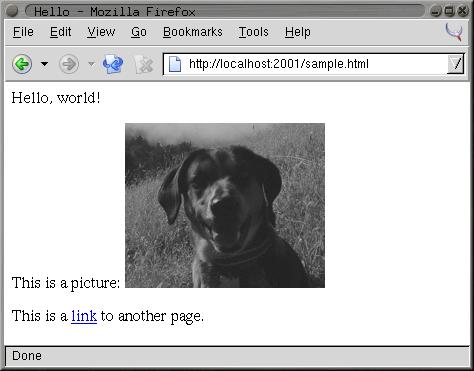
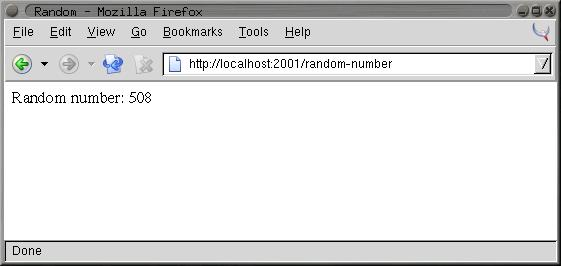
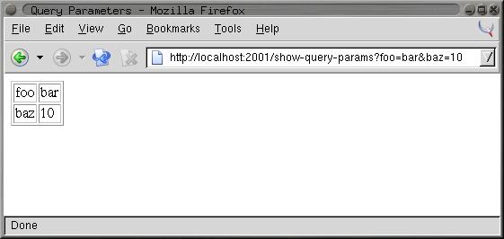
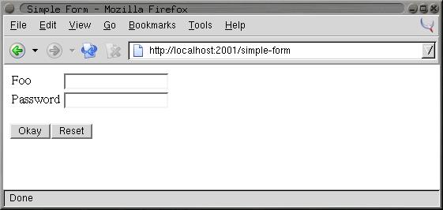
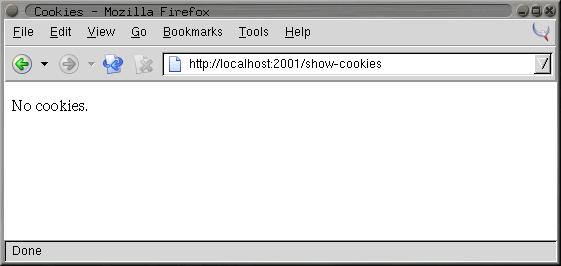

In this chapter you'll look at one way to develop Web-based programs in Common Lisp, using the open-source AllegroServe Web server. This isn't meant as a full introduction to AllegroServe. And I'm certainly not going to cover anything more than a tiny corner of the larger topic of Web programming. My goal here is to cover enough of the basics of using AllegroServe that you'll be able, in Chapter 29, to develop an application for browsing a library of MP3 files and streaming them to an MP3 client. Similarly, this chapter will serve as a brief introduction to Web programming for folks new to the topic.
While Web programming today typically involves quite a number of software frameworks and different protocols, the core bits of Web programming haven't changed much since they were invented in the early 1990s. For simple applications, such as the one you'll write in Chapter 29, you need to understand only a few key concepts, so I'll review them quickly here. Experienced Web programmers can skim or skip the rest of this section.1
To start, you need to understand the roles the Web browser and the Web server play in Web programming. While a modern browser comes with a lot of bells and whistles, the core functionality of a Web browser is to request Web pages from a Web server and then render them. Typically those pages will be written in the Hypertext Markup Language (HTML), which tells the browser how to render the page, including where to insert inline images and links to other Web pages. HTML consists of text marked up with tags that give the text a structure that the browser uses when rendering the page. For instance, a simple HTML document looks like this:
<html> <head> <title>Hello</title> </head> <body> <p>Hello, world!</p> <p>This is a picture: <img src="some-image.gif"></p> <p>This is a <a href="another-page.html">link</a> to another page.</p> </body> </html>
Figure 26-1 shows how the browser renders this page.

The browser and server communicate using a protocol called the Hypertext Transfer Protocol (HTTP). While you don't need to worry about the details of the protocol, it's worth understanding that it consists entirely of a sequence of requests initiated by the browser and responses generated by the server. That is, the browser connects to the Web server and sends a request that includes, at the least, the desired URL and the version of HTTP that the browser speaks. The browser can also include data in its request; that's how the browser submits HTML forms to the server.
To reply to a request, the server sends a response made up of a set of headers and a body. The headers contain information about the body, such as what type of data it is (for instance, HTML, plain text, or an image), and the body is the data itself, which is then rendered by the browser. The server can also send an error response telling the browser that its request couldn't be answered for some reason.
And that's pretty much it. Once the browser has received the complete response from the server, there's no communication between the browser and the server until the next time the browser decides to request a page from the server.2 This is the main constraint of Web programming--there's no way for code running on the server to affect what the user sees in their browser unless the browser issues a new request to the server.3
Some Web pages, called static pages, are simply HTML files stored on the Web server and served up when requested by the browser. Dynamic pages, on the other hand, consist of HTML generated each time the page is requested by a browser. For instance, a dynamic page might be generated by querying a database and then constructing HTML to represent the results of the query.4
When generating its response to a request, server-side code has four main pieces of information to act on. The first piece of information is the requested URL. Typically, however, the URL is used by the Web server itself to determine what code is responsible for generating the response. Next, if the URL contains a question mark, everything after the question mark is considered to be a query string, which is typically ignored by the Web server except that it makes it available to the code generating the response. Most of the time the query string contains a set of key/value pairs. The request from the browser can also contain post data, which also usually consists of key/value pairs. Post data is typically used to submit HTML forms. The key/value pairs supplied in either the query string or the post data are collectively called the query parameters.
Finally, in order to string together a sequence of individual requests from the same browser, code running in the server can set a cookie, sending a special header in its response to the browser that contains a bit of opaque data called a cookie. After a cookie is set by a particular server, the browser will send the cookie with each request it sends to that server. The browser doesn't care about the data in the cookie--it just echoes it back to the server for the server-side code to interpret however it wants.
These are the primitive elements on top of which 99 percent of server-side Web programming is built. The browser sends a request, the server finds some code to handle the request and runs it, and the code uses query parameters and cookies to determine what to do.
You can serve Web content using Common Lisp in a number of ways; there are at least three open-source Web servers written in Common Lisp as well as plug-ins such as mod_lisp5 and Lisplets6 that allow the Apache Web server or any Java Servlet container to delegate requests to a Lisp server running in a separate process.
For this chapter, you'll use a version of the open-source Web server AllegroServe, originally written by John Foderaro at Franz Inc.. AllegroServe is included in the version of Allegro available from Franz for use with this book. If you're not using Allegro, you can use PortableAllegroServe, a friendly fork of the AllegroServe code base, which includes an Allegro compatibility layer that allows PortableAllegroServe to run on most Common Lisps. The code you'll write in this chapter and in Chapter 29 should run in both vanilla AllegroServe and PortableAllegroServe.
AllegroServe provides a programming model similar in spirit to Java Servlets--each time a browser requests a page, AllegroServe parses the request and looks up an object, called an entity, which handles the request. Some entity classes provided as part of AllegroServe know how to serve static content--either individual files or the contents of a directory tree. Others, the ones I'll spend most of this chapter discussing, run arbitrary Lisp code to generate the response.7
But before I get to that, you need to know how to start AllegroServe and set it up to serve a few files. The first step is to load the AllegroServe code into your Lisp image. In Allegro, you can simply type (require :aserve). In other Lisps (or in Allegro), you can load PortableAllegroServe by loading the file INSTALL.lisp at the top of the portableaserve directory tree. Loading AllegroServe will create three new packages, NET.ASERVE, NET.HTML.GENERATOR, and NET.ASERVE.CLIENT.8
After loading the server, you start it with the function start in the NET.ASERVE package. To have easy access to the symbols exported from NET.ASERVE, from COM.GIGAMONKEYS.HTML (a package I'll discuss in a moment), and from the rest of Common Lisp, you should create a new package to play in like this:
CL-USER> (defpackage :com.gigamonkeys.web
(:use :cl :net.aserve :com.gigamonkeys.html))
#<The COM.GIGAMONKEYS.WEB package>
Now switch to that package with this IN-PACKAGE expression:
CL-USER> (in-package :com.gigamonkeys.web) #<The COM.GIGAMONKEYS.WEB package> WEB>
Now you can use the exported names from NET.ASERVE without qualification. The function start starts the server. It takes quite a number of keyword parameters, but the only one you need to pass is :port, which specifies the port to listen on. You should probably use a high port such as 2001 instead of the default port for HTTP servers, 80, because on Unix-derived operating systems only the root user can listen on ports below 1024. To run AllegroServe listening on port 80 on Unix, you'd need to start Lisp as root and then use the :setuid and :setgid parameters to tell start to switch its identity after opening the port. You can start a server listening on port 2001 like this:
WEB> (start :port 2001) #<WSERVER port 2001 @ #x72511c72>
The server is now running in your Lisp. It's possible you'll get an error that says something about "port already in use" when you try to start the server. This means port 2001 is already in use by some other server on your machine. In that case, the simplest fix is to use a different port, supplying a different argument to start and then using that value instead of 2001 in the URLs used throughout this chapter.
You can continue to interact with Lisp via the REPL because AllegroServe starts its own threads to handle requests from browsers. This means, among other things, that you can use the REPL to get a view into the guts of your server while it's running, which makes debugging and testing a lot easier than if the server is a complete black box.
Assuming you're running Lisp on the same machine as your browser, you can check that the server is up and running by pointing your browser at http://localhost:2001/. At this point you should get a page-not-found error message in the browser since you haven't published anything yet. But the error message will be from AllegroServe; it'll say so at the bottom of the page. On the other hand, if the browser displays an error dialog that says something like "The connection was refused when attempting to contact localhost:2001," it means either that the server isn't running or that you started it with a different port than 2001.
Now you can publish some files. Suppose you have a file hello.html in the directory /tmp/html with the following contents:
<html> <head> <title>Hello</title> </head> <body> <p>Hello, world!</p> </body> </html>
You can publish it individually with the publish-file function.
WEB> (publish-file :path "/hello.html" :file "/tmp/html/hello.html") #<NET.ASERVE::FILE-ENTITY @ #x725eddea>
The :path argument is the path that will appear in the URL requested by the browser, while the :file argument is the name of the file in the file system. After evaluating the publish-file expression, you can point your browser to http://localhost:2001/hello.html, and it should display a page something like Figure 26-2.
http://localhost:2001/hello.html
You could also publish a whole directory tree of files using the publish-directory function. First let's clear out the already published entity with the following call to publish-file:
WEB> (publish-file :path "/hello.html" :remove t) NIL
Now you can publish the whole /tmp/html/ directory (and all its subdirectories) with the publish-directory function.
WEB> (publish-directory :prefix "/" :destination "/tmp/html/") #<NET.ASERVE::DIRECTORY-ENTITY @ #x72625aa2>
In this case, the :prefix argument specifies the beginning of the path part of URLs that should be handled by this entity. Thus, if the server receives a request for http://localhost:2001/foo/bar.html, the path is /foo/bar.html, which starts with /. This path is then translated to a filename by replacing the prefix, /, with the destination, /tmp/html/. Thus, the URL http://localhost:2001/hello.html will still be translated into a request for the file /tmp/html/hello.html.
Publishing entities that generate dynamic content is nearly as simple as publishing static content. The functions publish and publish-prefix are the dynamic analogs of publish-file and publish-directory. The basic idea of these two functions is that you publish a function that will be called to generate the response to a request for either a specific URL or any URL with a given prefix. The function will be called with two arguments: an object representing the request and the published entity. Most of time you don't need to do anything with the entity object except to pass it along to a couple macros I'll discuss in a moment. On the other hand, you'll use the request object to obtain information submitted by the browser--query parameters included in the URL or data posted using an HTML form.
For a trivial example of using a function to generate dynamic content, let's write a function that generates a page with a different random number each time it's requested.
(defun random-number (request entity)
(with-http-response (request entity :content-type "text/html")
(with-http-body (request entity)
(format
(request-reply-stream request)
"<html>~@
<head><title>Random</title></head>~@
<body>~@
<p>Random number: ~d</p>~@
</body>~@
</html>~@
"
(random 1000)))))
The macros with-http-response and with-http-body are part of AllegroServe. The former starts the process of generating an HTTP response and can be used, as here, to specify things such as the type of content that will be returned. It also handles various parts of HTTP such as dealing with If-Modified-Since requests. The with-http-body actually sends the HTTP response headers and then executes its body, which should contain code that generates the content of the reply. Within with-http-response but before the with-http-body, you can add or change HTTP headers to be sent in the reply. The function request-reply-stream is also part of AllegroServe and returns the stream to which you should write output intended to be sent to the browser.
As this function shows, you can just use FORMAT to print HTML to the stream returned by request-reply-stream. In the next section, I'll show you more convenient ways to programmatically generate HTML.9
Now you're ready to publish this function.
WEB> (publish :path "/random-number" :function 'random-number) #<COMPUTED-ENTITY @ #x7262bab2>
As it does in the publish-file function, the :path argument specifies the path part of the URL that will result in this function being invoked. The :function argument specifies either the name or an actual function object. Using the name of a function, as shown here, allows you to redefine the function later without republishing and have AllegroServe use the new function definition. After evaluating the call to publish, you can point your browser at http:// localhost:2001/random-number to get a page with a random number on it, as shown in Figure 26-3.

http://localhost:2001/random-number
Although using FORMAT to emit HTML works fine for the simple pages I've discussed so far, as you start building more elaborate pages it'd be nice to have a more concise way to generate HTML. Several libraries are available for generating HTML from an s-expression representation including one, htmlgen, that's included with AllegroServe. In this chapter you'll use a library called FOO,10 which is loosely modeled on Franz's htmlgen and whose implementation you'll look at in more detail in Chapters 30 and 31. For now, however, you just need to know how to use FOO.
Generating HTML from within Lisp is quite natural since s-expressions and HTML are essentially isomorphic. You can represent HTML elements with s-expressions by treating each element in HTML as a list "tagged" with an appropriate first element, such as a keyword symbol of the same name as the HTML tag. Thus, the HTML <p>foo</p> is represented by the s-expression (:p "foo"). Because HTML elements nest the same way lists in s-expressions do, this scheme extends to more complex HTML. For instance, this HTML:
<html> <head> <title>Hello</title> </head> <body> <p>Hello, world!</p> </body> </html>
could be represented with the following s-expression:
(:html (:head (:title "Hello")) (:body (:p "Hello, world!")))
HTML elements with attributes complicate things a bit but not in an insurmountable way. FOO supports two ways of including attributes in a tag. One is to simply follow the first item of the list with keyword/value pairs. The first element that follows a keyword/value pair that's not itself a keyword symbol marks the beginning of the element's contents. Thus, you'd represent this HTML:
<a href="foo.html">This is a link</a>
with the following s-expression:
(:a :href "foo.html" "This is a link")
The other syntax FOO supports is to group the tag name and attributes into their own list like this:
((:a :href "foo.html") "This is link.")
FOO can use the s-expression representation of HTML in two ways. The function emit-html takes an HTML s-expression and outputs the corresponding HTML.
WEB> (emit-html '(:html (:head (:title "Hello")) (:body (:p "Hello, world!"))))
<html>
<head>
<title>Hello</title>
</head>
<body>
<p>Hello, world!</p>
</body>
</html>
T
However, emit-html isn't always the most efficient way to generate HTML because its argument must be a complete s-expression representation of the HTML to be generated. While it's easy to build such a representation, it's not always particularly efficient. For instance, suppose you wanted to make an HTML page containing a list of 10,000 random numbers. You could build the s-expression using a backquote template and then pass it to emit-html like this:
(emit-html
`(:html
(:head
(:title "Random numbers"))
(:body
(:h1 "Random numbers")
(:p ,@(loop repeat 10000 collect (random 1000) collect " ")))))
However, this has to build a tree containing a 10,000-element list before it can even start emitting HTML, and the whole s-expression will become garbage as soon as the HTML is emitted. To avoid this inefficiency, FOO also provides a macro html, which allows you to embed bits of Lisp code in the middle of an HTML s-expression.
Literal values such as strings and numbers in the input to html are interpolated into the output HTML. Likewise, symbols are treated as variable references, and code is generated to emit their value at runtime. Thus, both of these:
(html (:p "foo")) (let ((x "foo")) (html (:p x)))
will emit the following:
<p>foo</p>
List forms that don't start with a keyword symbol are assumed to be code and are embedded in the generated code. Any values the embedded code returns will be ignored, but the code can emit more HTML by calling html itself. For instance, to emit the contents of a list in HTML, you might write this:
(html (:ul (dolist (item (list 1 2 3)) (html (:li item)))))
which will emit the following HTML:
<ul> <li>1</li> <li>2</li> <li>3</li> </ul>
If you want to emit the value of a list form, you must wrap it in the pseudotag :print. Thus, this expression:
(html (:p (+ 1 2)))
generates this HTML after computing and discarding the value 3:
<p></p>
To emit the 3, you must write this:
(html (:p (:print (+ 1 2))))
Or you could compute the value and store it in a variable outside the call to html like this:
(let ((x (+ 1 2))) (html (:p x)))
Thus, you can use the html macro to generate the list of random numbers like this:
(html
(:html
(:head
(:title "Random numbers"))
(:body
(:h1 "Random numbers")
(:p (loop repeat 10 do (html (:print (random 1000)) " "))))))
The macro version will be quite a bit more efficient than the emit-html version. Not only do you never have to generate an s-expression representing the whole page, also much of the work that emit-html does at runtime to interpret the s-expression will be done once, when the macro is expanded, rather than every time the code is run.
You can control where the output generated by both html and emit-html is sent with the macro with-html-output, which is part of the FOO library. Thus, you can use the with-html-output and html macros from FOO to rewrite random-number like this:
(defun random-number (request entity)
(with-http-response (request entity :content-type "text/html")
(with-http-body (request entity)
(with-html-output ((request-reply-stream request))
(html
(:html
(:head (:title "Random"))
(:body
(:p "Random number: " (:print (random 1000))))))))))
Another feature of FOO is that it allows you to define HTML "macros" that can translate arbitrary forms into HTML s-expressions that the html macro understands. For instance, suppose you frequently find yourself writing pages of this form:
(:html
(:head (:title "Some title"))
(:body
(:h1 "Some title")
... stuff ...))
You could define an HTML macro to capture that pattern like this:
(define-html-macro :standard-page ((&key title) &body body)
`(:html
(:head (:title ,title))
(:body
(:h1 ,title)
,@body)))
Now you can use the "tag" :standard-page in your s-expression HTML, and it'll be expanded before being interpreted or compiled. For instance, the following:
(html (:standard-page (:title "Hello") (:p "Hello, world.")))
generates the following HTML:
<html>
<head>
<title>Hello</title>
</head>
<body>
<h1>Hello</h1>
<p>Hello, world.</p>
</body>
</html>
Of course, generating HTML output is only half of Web programming. The other thing you need to do is get input from the user. As I discussed in the "A 30-Second Intro to Server-Side Web Programming" section, when a browser requests a page from a Web server, it can send query parameters in the URL and post data, both of which act as input to the server-side code.
AllegroServe, like most Web programming frameworks, takes care of parsing both these sources of input for you. By the time your published functions are called, all the key/value pairs from the query string and/or post data have been decoded and placed into an alist that you can retrieve from the request object with the function request-query. The following function returns a page showing all the query parameters it receives:
(defun show-query-params (request entity)
(with-http-response (request entity :content-type "text/html")
(with-http-body (request entity)
(with-html-output ((request-reply-stream request))
(html
(:standard-page
(:title "Query Parameters")
(if (request-query request)
(html
(:table :border 1
(loop for (k . v) in (request-query request)
do (html (:tr (:td k) (:td v))))))
(html (:p "No query parameters.")))))))))
(publish :path "/show-query-params" :function 'show-query-params)
If you give your browser a URL with a query string in it like the following:
http://localhost:2001/show-query-params?foo=bar&baz=10
you should get back a page similar to the one shown in Figure 26-4.

http://localhost:2001/show-query-params?foo=bar&baz=10
To generate some post data, you need an HTML form. The following function generates a simple form, which submits its data to show-query-params:
(defun simple-form (request entity)
(with-http-response (request entity :content-type "text/html")
(with-http-body (request entity)
(let ((*html-output* (request-reply-stream request)))
(html
(:html
(:head (:title "Simple Form"))
(:body
(:form :method "POST" :action "/show-query-params"
(:table
(:tr (:td "Foo")
(:td (:input :name "foo" :size 20)))
(:tr (:td "Password")
(:td (:input :name "password" :type "password" :size 20))))
(:p (:input :name "submit" :type "submit" :value "Okay")
(:input ::type "reset" :value "Reset"))))))))))
(publish :path "/simple-form" :function 'simple-form)
Point your browser to http://localhost:2001/simple-form, and you should see a page like the one in Figure 26-5.
If you fill in the form with the "abc" and "def" values, clicking the Okay button should take you to a page like the one in Figure 26-6.

http://localhost:2001/simple-form

However, most of the time you won't need to iterate over all the query parameters; you'll want to pick out individual parameters. For instance, you might want to modify random-number so the limit value you pass to RANDOM can be supplied via a query parameter. In that case, you use the function request-query-value, which takes the request object and the name of the parameter whose value you want and returns the value as a string or NIL if no such parameter has been supplied. A parameterizable version of random-number might look like this:
(defun random-number (request entity)
(with-http-response (request entity :content-type "text/html")
(with-http-body (request entity)
(let* ((*html-output* (request-reply-stream request))
(limit-string (or (request-query-value "limit" request) ""))
(limit (or (parse-integer limit-string :junk-allowed t) 1000)))
(html
(:html
(:head (:title "Random"))
(:body
(:p "Random number: " (:print (random limit))))))))))
Because request-query-value can return either NIL or an empty string, you have to deal with both those cases when parsing the parameter into a number to pass to RANDOM. You can deal with a NIL value when you bind limit-string, binding it to "" if there's no "limit" query parameter. Then you can use the :junk-allowed argument to PARSE-INTEGER to ensure that it returns either NIL (if it can't parse an integer from the string given) or an integer. In the section "A Small Application Framework," you'll develop some macros to make it easier to deal with grabbing query parameters and converting them to various types.
In AllegroServe you can send a Set-Cookie header that tells the browser to save a cookie and send it along with subsequent requests by calling the function set-cookie-header within the body of with-http-response but before the call to with-http-body. The first argument to the function is the request object, and the remaining arguments are keyword arguments used to set the various properties of the cookie. The only two you must pass are the :name and :value arguments, both of which should be strings. The other possible arguments that affect the cookie sent to the browser are :expires, :path, :domain, and :secure.
Of these, you need to worry only about :expires. It controls how long the browser should save the cookie. If :expires is NIL (the default), the browser will save the cookie only until it exits. Other possible values are :never, which means the cookie should be kept forever, or a universal time as returned by GET-UNIVERSAL-TIME or ENCODE-UNIVERSAL-TIME. An :expires of zero tells the client to immediately discard an existing cookie.11
After you've set a cookie, you can use the function get-cookie-values to get an alist containing one name/value pair for each cookie sent by the browser. From that alist, you can pick out individual cookie values using ASSOC and CDR.
The following function shows the names and values of all the cookies sent by the browser:
(defun show-cookies (request entity)
(with-http-response (request entity :content-type "text/html")
(with-http-body (request entity)
(with-html-output ((request-reply-stream request))
(html
(:standard-page
(:title "Cookies")
(if (null (get-cookie-values request))
(html (:p "No cookies."))
(html
(:table
(loop for (key . value) in (get-cookie-values request)
do (html (:tr (:td key) (:td value)))))))))))))
(publish :path "/show-cookies" :function 'show-cookies)
The first time you load the page http://localhost:2001/show-cookies it should say "No cookies" as shown in Figure 26-7 since you haven't set any yet.

http://localhost:2001/show-cookies with no cookies
To set a cookie, you need another function, such as the following:
(defun set-cookie (request entity)
(with-http-response (request entity :content-type "text/html")
(set-cookie-header request :name "MyCookie" :value "A cookie value")
(with-http-body (request entity)
(with-html-output ((request-reply-stream request))
(html
(:standard-page
(:title "Set Cookie")
(:p "Cookie set.")
(:p (:a :href "/show-cookies" "Look at cookie jar."))))))))
(publish :path "/set-cookie" :function 'set-cookie)
If you enter the URL http://localhost:2001/set-cookie, your browser should display a page like the one in Figure 26-8. Additionally, the server will send a Set-Cookie header with a cookie named "MyCookie" with "A cookie value" as its value. If you click the link Look at cookie jar, you'll be taken to the /show-cookies page where you'll see the new cookie, as shown in Figure 26-9. Because you didn't specify an :expires argument, the browser will continue to send the cookie with each request until you quit the browser.

http://localhost:2001/set-cookie

http://localhost:2001/show-cookies after setting a cookie
Although AllegroServe provides fairly straightforward access to all the basic facilities you need to write server-side Web code (access to query parameters from both the URL's query string and the post data; the ability to set cookies and retrieve their values; and, of course, the ability to generate the response sent back to the browser), there's a fair bit of annoyingly repetitive code.
For instance, every HTML-generating function you write is going to take the arguments request and entity and then will contain calls to with-http-response, with-http-response, and--if you're going to use FOO to generate HTML--with-html-output. Then, in functions that need to get at query parameters, there will be a bunch of calls to request-query-value and then more code to convert the string returned to whatever type you actually want. Finally, you need to remember to publish the function.
To reduce the amount of boilerplate you have to write, you can write a small framework on top of AllegroServe to make it easier to define functions that handle requests for a particular URL.
The basic approach will be to define a macro, define-url-function, that you'll use to define functions that will automatically be published via publish. This macro will expand into a DEFUN that contains the appropriate boilerplate as well as code to publish the function under a URL of the same name. It'll also take care of generating code to extract values from query parameters and cookies and to bind them to variables declared in the function's parameter list. Thus, the basic form of a define-url-function definition is this:
(define-url-function name (request query-parameter*) body)
where the body is the code to emit the HTML of the page. It'll be wrapped in a call to FOO's html macro, so for simple pages it might contain nothing but s-expression HTML.
Within the body, the query parameter variables will be bound to values of query parameters with the same name or from a cookie. In the simplest case, a query parameter's value will be the string taken from the query parameter or post data field of the same name. If the query parameter is specified with a list, you can also specify an automatic type conversion, a default value, and whether to look for and save the value of the parameter in a cookie. The complete syntax for a query-parameter is as follows:
name | (name type [default-value] [stickiness])
The type must be a name recognized by define-url-function. I'll discuss in a moment how to define new types. The default-value must be a value of the given type. Finally, stickiness, if supplied, indicates that the parameter's value should be taken from an appropriately named cookie if no query parameter is supplied and that a Set-Cookie header should be sent in the response that saves the value in the cookie of the same name. Thus, a sticky parameter, after being explicitly supplied a value via a query parameter, will keep that value on subsequent requests of the page even when no query parameter is supplied.
The name of the cookie used depends on the value of stickiness: with a value of :global, the cookie will be named the same as the parameter. Thus, different functions that use globally sticky parameters with the same name will share the value. If stickiness is :package, then the cookie name is constructed from the name of the parameter and the package of the function's name; this allows functions in the same package to share values but not have to worry about stomping on parameters of functions in other packages. Finally, a parameter with a stickiness value of :local will use a cookie made from the name of the parameter, the package of the function name, and the function name, making it unique to that function.
For instance, you can use define-url-function to replace the previous eleven-line definition of random-page with this five-line version:
(define-url-function random-number (request (limit integer 1000))
(:html
(:head (:title "Random"))
(:body
(:p "Random number: " (:print (random limit))))))
If you wanted the limit argument to be sticky, you could change the limit declaration to (limit integer 1000 :local).
I'll explain the implementation of define-url-function from the top down. The macro itself looks like this:
(defmacro define-url-function (name (request &rest params) &body body)
(with-gensyms (entity)
(let ((params (mapcar #'normalize-param params)))
`(progn
(defun ,name (,request ,entity)
(with-http-response (,request ,entity :content-type "text/html")
(let* (,@(param-bindings name request params))
,@(set-cookies-code name request params)
(with-http-body (,request ,entity)
(with-html-output ((request-reply-stream ,request))
(html ,@body))))))
(publish :path ,(format nil "/~(~a~)" name) :function ',name)))))
Let's take it bit by bit, starting with the first few lines.
(defmacro define-url-function (name (request &rest params) &body body)
(with-gensyms (entity)
(let ((params (mapcar #'normalize-param params)))
Up to here you're just getting ready to generate code. You GENSYM a symbol to use later as the name of the entity parameter in the DEFUN. Then you normalize the parameters, converting plain symbols to list form using this function:
(defun normalize-param (param)
(etypecase param
(list param)
(symbol `(,param string nil nil))))
In other words, declaring a parameter with just a symbol is the same as declaring a nonsticky, string parameter with no default value.
Then comes the PROGN. You must expand into a PROGN because you need to generate code to do two things: define a function with DEFUN and call publish. You should define the function first so if there's an error in the definition, the function won't be published. The first two lines of the DEFUN are just boilerplate.
(defun ,name (,request ,entity) (with-http-response (,request ,entity :content-type "text/html")
Now you do the real work. The following two lines generate the bindings for the parameters specified in define-url-function other than request and the code that calls set-cookie-header for the sticky parameters. Of course, the real work is done by helper functions that you'll look at in a moment.12
(let* (,@(param-bindings name request params))
,@(set-cookies-code name request params)
The rest is just more boilerplate, putting the body from the define-url-function definition in the appropriate context of with-http-body, with-html-output, and html macros. Then comes the call to publish.
(publish :path ,(format nil "/~(~a~)" name) :function ',name)
The expression (format nil "/~(~a~)" name) is evaluated at macro expansion time, generating a string consisting of /, followed by an all-lowercase version of the name of the function you're about to define. That string becomes the :path argument to publish, while the function name is interpolated as the :function argument.
Now let's look at the helper functions used to generate the DEFUN form. To generate parameter bindings, you need to loop over the params and collect a snippet of code for each one, generated by param-binding. That snippet will be a list containing the name of the variable to bind and the code that will compute the value of that variable. The exact form of code used to compute the value will depend on the type of the parameter, whether it's sticky, and the default value, if any. Because you already normalized the params, you can use DESTRUCTURING-BIND to take them apart in param-binding.
(defun param-bindings (function-name request params)
(loop for param in params
collect (param-binding function-name request param)))
(defun param-binding (function-name request param)
(destructuring-bind (name type &optional default sticky) param
(let ((query-name (symbol->query-name name))
(cookie-name (symbol->cookie-name function-name name sticky)))
`(,name (or
(string->type ',type (request-query-value ,query-name ,request))
,@(if cookie-name
(list `(string->type ',type (get-cookie-value ,request ,cookie-name))))
,default)))))
The function string->type, which you use to convert strings obtained from the query parameters and cookies to the desired type, is a generic function with the following signature:
(defgeneric string->type (type value))
To make a particular name usable as a type name for a query parameter, you just need to define a method on string->type. You'll need to define at least a method specialized on the symbol string since that's the default type. Of course, that's pretty easy. Since browsers sometimes submit forms with empty strings to indicate no value was supplied for a particular value, you'll want to convert an empty string to NIL as this method does:
(defmethod string->type ((type (eql 'string)) value) (and (plusp (length value)) value))
You can add conversions for other types needed by your application. For instance, to make integer usable as a query parameter type so you can handle the limit parameter of random-page, you might define this method:
(defmethod string->type ((type (eql 'integer)) value) (parse-integer (or value "") :junk-allowed t))
Another helper function used in the code generated by param-binding is get-cookie-value, which is just a bit of sugar around the get-cookie-values function provided by AllegroServe. It looks like this:
(defun get-cookie-value (request name) (cdr (assoc name (get-cookie-values request) :test #'string=)))
The functions that compute the query parameter and cookies names are similarly straightforward.
(defun symbol->query-name (sym)
(string-downcase sym))
(defun symbol->cookie-name (function-name sym sticky)
(let ((package-name (package-name (symbol-package function-name))))
(when sticky
(ecase sticky
(:global
(string-downcase sym))
(:package
(format nil "~(~a:~a~)" package-name sym))
(:local
(format nil "~(~a:~a:~a~)" package-name function-name sym))))))
To generate the code that sets cookies for sticky parameters, you again loop over the list of parameters, this time collecting a snippet of code for each sticky param. You can use the when and collect it LOOP forms to collect only the non-NIL values returned by set-cookie-code.
(defun set-cookies-code (function-name request params)
(loop for param in params
when (set-cookie-code function-name request param) collect it))
(defun set-cookie-code (function-name request param)
(destructuring-bind (name type &optional default sticky) param
(declare (ignore type default))
(if sticky
`(when ,name
(set-cookie-header
,request
:name ,(symbol->cookie-name function-name name sticky)
:value (princ-to-string ,name))))))
One of the advantages of defining macros in terms of helper functions like this is that it's easy to make sure the individual bits of code you're generating look right. For instance, you can check that the following set-cookie-code:
(set-cookie-code 'foo 'request '(x integer 20 :local))
generates something like this:
(WHEN X
(SET-COOKIE-HEADER REQUEST
:NAME "com.gigamonkeys.web:foo:x"
:VALUE (PRINC-TO-STRING X)))
Assuming this code will occur in a context where x is the name of a variable, this looks good.
Once again, macros have allowed you to distill the code you need to write down to its essence--in this case, the data you want to extract from the request and the HTML you want to generate. That said, this framework isn't meant to be the be-all and end-all of Web application frameworks--it's just a little sugar to make it a bit easier to write simple apps like the one you'll write in Chapter 29.
But before you can get to that, you need to write the guts of the application for which the Chapter 29 application will be the user interface. You'll start in the next chapter with a souped-up version of the database you wrote in Chapter 3, this time to keep track of ID3 data extracted from MP3 files.
1Readers new to Web programming will probably need to supplement this introduction with a more in-depth tutorial or two. You can find a good set of online tutorials at http://www.jmarshall.com/easy/.
2Loading a single Web page may actually involve multiple requests--to render the HTML of a page containing inline images, the browser must request each image individually and then insert each into the appropriate place in the rendered HTML.
3Much of the complexity around Web programming is a result of trying to work around this fundamental limitation in order to provide a user experience that's more like the interactivity provided by desktop applications.
4Unfortunately, dynamic is somewhat overloaded in the Web world. The phrase Dynamic HTML refers to HTML containing embedded code, usually in the language JavaScript, that can be executed in the browser without further communication with the Web server. Used with some discretion, Dynamic HTML can improve the usability of a Web-based application since, even with high-speed Internet connections, making a request to a Web server, receiving the response, and rendering the new page can take a noticeable amount of time. To further confuse things, dynamically generated pages (in other words, generated on the server) could also contain Dynamic HTML (code to be run on the client.) For the purposes of this book, you'll stick to dynamically generating plain old nondynamic HTML.
5http://www.fractalconcept.com/asp/html/mod_lisp.html
6http://lisplets.sourceforge.net/
7AllegroServe also provides a framework called Webactions that's analogous to JSPs in the Java world--instead of writing code that generates HTML, with Webactions you write pages that are essentially HTML with a bit of magic foo that turns into code to be run when the page is served. I won't cover Webactions in this book.
8Loading PortableAllegroServe will create some other packages for the compatibility libraries, but the packages you'll care about are those three.
9The ~@ followed by a newline tells FORMAT to ignore whitespace after the newline, which allows you to indent your code nicely without adding a bunch of whitespace to the HTML. Since white-space is typically not significant in HTML, this doesn't matter to the browser, but it makes the generated HTML source look a bit nicer to humans.
10FOO is a recursive tautological acronym for FOO Outputs Output.
11For information about the meaning of the other parameters, see the AllegroServe documentation and RFC 2109, which describes the cookie mechanism.
12You need to use LET* rather than a LET to allow the default value forms for parameters to refer to parameters that appear earlier in the parameter list. For example, you could write this:
(define-url-function (request (x integer 10) (y integer (* 2 x))) ...)
and the value of y, if not explicitly supplied, would be twice the value of x.